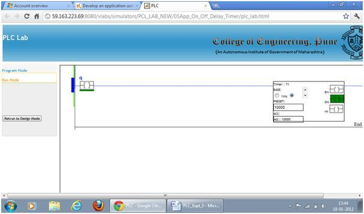

Aim
To Develop an application using OFF Delay Timer
Objective:-
- 1. Study the timing diagram of OFF Delay Timer.
2. Solve the assignment of Toff timer.

Q1.
Which bit of timer ensures that the timing process is over i.e. accumulated and preset time is equal
DN
TT
EN
Q2.
Toff stands for
On delay timer
Off delay timer
Retentive timer
Q3.
DN bit for Ton timer is initially high when the program is switched to run mode after downloading
True
False
Can’t say
Q4.
Which of the following is not type of timer
RTO
CTU
TON
Q5.
To stop the timer operation
The rung condition is made false
The accumulated value is set to zero
The done bit is set to low

Introduction:
The timer concept and details of on delay timers with its terminology is discussed in the previous experiment. Let us learn about Off-Delay Timer (TOF).
OFF-Delay Timer:
Consider an example where the contents of a storage tank are to transfer to further process. When the low level is detected by level switch the outlet valve is to be closed. To allow entire contents to drain out, some time delay is needed as the level switch is installed slightly above the tank bottom level. This can be achieved by using off delay timer.
Consider an example that, there is a Low level switch to a tank, and we have to close the drain valve of the tank after 5 second delay when low level is reached. In this case this 5 seconds delay can be given using off delay timer as we have to close the drain valve after delay.
The figure below shows a symbolic representation of the off delay timer.

The instruction mainly includes three status bits namely EN, TT, DN. Their significance is as follows:
EN-Enable Bit: - The enable bit indicates the TOF instruction is enabled.
TT-Timer-Timing Bit: - The timing bit indicates the timing operation is in process.
DN- Done Bit: - The done bit changes state whenever the accumulated value reaches the preset value.
ACC- Accumulator Bit: - The accumulated value specifies the number of milliseconds that have elapsed since the TOF instruction was enabled.
Pre-Preset Bit: - The preset value specifies the value (1msec units) which the accumulated value must reach before the instruction clears the DN bit.
The figure shows the timing diagram which illustrates the functioning of all the bits in sequence.
The timing diagram illustrates the functioning of all the bits in sequence.

The following example, will illustrate the function of each bit of Off Delay Timer after downloading the ladder and taking the PLC in run mode.

For low to high transition of start bit, timer will start lamp 3 will glow, as T1.DN,bit is high. When the start bit is toggled again i.e from high to low, the delay is provided and after 5 seconds delay lamp3 will be off.
The Function Block Diagram, Timing diagrams, and ladder diagram solutions are as per the available PLC(Rockwell Automation) in College of Engineering Pune.

Implement the operation using Simulator.
The configuration of off delay timer is same as 'on delay timer'.
A typical difference can be observed in the operation (in Run mode) .
When the q bit is energised the output DN bit goes high. The timer starts only after toggling the initialisation bit again.

To test the EN, DN, and TT bits; double click on the bit and give tag name to the bit. The same tag name is to be used in the new rung to test the status or to energies the output. You can also test the cascading of the timer using these bits.

Q1.
The main difference between a Ton and a Toff timer is that
Toff can maintain the accumulated time on loss of logic continuity
Ton can maintain the accumulated time on loss of logic continuity
Toff timer begins timing when logic continuity to the rung is lost
Q2.
DN bit for Toff timer is initially high when the program is switched to run mode after downloading
True
False
Can’t say
Q3.
The done bit changes state whenever
the timer timing value reaches the preset value
the accumulated value reaches the preset value
the accumulated value reaches the timer timing value
Q4.
Toff is used when action is not expected after specific delay
True
False
Can’t say
Q5.
In off delay timer the status of TT bit is same as
Rung condition IN bit
DN bit
EN bit

- 1. List the applications of off delay timer.
2. With timing diagram explain the working of off delay timer.
3. Write a ladder program to switch off a lamp after 10 sec delay when the input condition to the rung has failed.
4. Explain the difference between Ton and Toff timer.
5. When retentive timers are preferred? Suggest suitable applications.

- Gary Dunning, “Introduction Programmable Logic Controllers”, CENGAGE Learning, 3rd Ed., 2006.
- John R. Hackworth, Frederick D. Hackworth Jr., “Programmable Logic Controllers ”, Pearson, 2004.
- W.Bolton, “Programmable Logic Controllers”, Elsevier, 4th Ed., 2006.
- http://plcbasics.net/
- http://www.plcmanual.com/
- http://literature.rockwellautomation.com/
- http://www.automation.siemens.com/